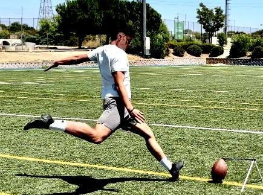
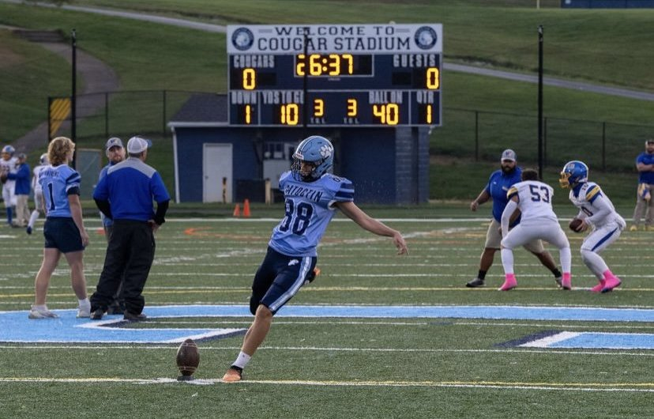
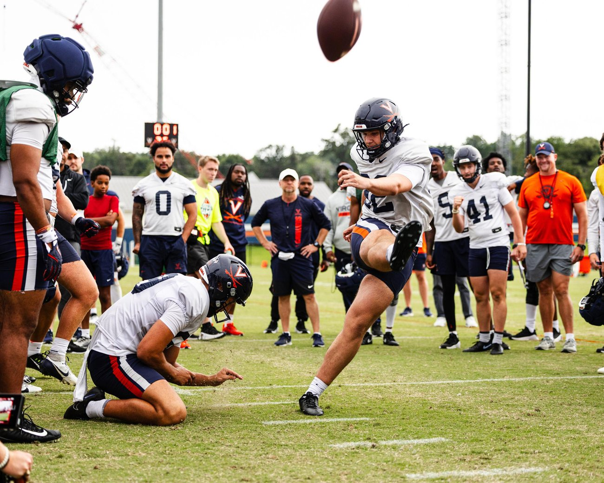

El viaje que lo cambió todoThe journey that changed everything
Una historia que parece escrita siguiendo un guion. No lo es.A story that looks like it was written from a script. It wasn't.

Un billete para aprender inglésA ticket to learn English
Jorge creció en Madrid jugando al fútbol desde niño. Técnica de golpeo, coordinación, precisión: cualidades que un día resultarían decisivas, aunque entonces nadie lo sabía.Jorge grew up in Madrid playing soccer from a young age. Striking technique, coordination, precision: qualities that would one day prove decisive, though no one knew it then.
En 2023, con 16 años, cogió un avión a Baltimore como estudiante de intercambio rumbo al Catoctin High School (Thurmont, Maryland). Su objetivo: mejorar el inglés y vivir una experiencia internacional. El football americano no estaba en sus planes.In 2023, at 16, he boarded a plane to Baltimore as an exchange student bound for Catoctin High School (Thurmont, Maryland). His goal: improve his English and live an international experience. American football was not in his plans.

El descubrimientoThe discovery
Sus hermanos anfitriones jugaban con un balón ovalado en el patio. Jorge quiso demostrar su pierna… y el balón voló por encima de los cables de la luz. El director atlético organizó una prueba. Lo botó por encima de las líneas una y otra vez.His host brothers were playing with an oval ball in the backyard. Jorge wanted to show off his leg… and the ball flew over the power lines. The athletic director set up a tryout. He booted it over the lines again and again.
«Puedes jugar. Tienes un puesto.» En pocas semanas se convirtió en el especialista del equipo y, esa temporada, los Cougars volvieron a playoffs por primera vez desde 2019. La prensa local lo bautizó como su «arma secreta»."You can play. You have a spot." Within weeks he became the team's specialist and, that season, the Cougars returned to the playoffs for the first time since 2019. The local press dubbed him their "secret weapon."

La escalada a la éliteThe climb to the elite
Tras un año senior histórico en Saint James School —uno de los programas preparatorios más prestigiosos del este de EE. UU.— y un rendimiento sobresaliente en los Kohl's Kicking Camps, el interés llegó desde arriba.After a historic senior year at Saint James School —one of the most prestigious prep programs in the eastern U.S.— and an outstanding showing at the Kohl's Kicking Camps, the interest came from the top.
Pasó 2025 en Virginia como redshirt. En 2026 llegó a Marshall University, en la Sun Belt Conference, con el dorsal #41. Allí ha convertido sus primeros field goals y puntos extra en la NCAA División I FBS.He spent 2025 at Virginia as a redshirt. In 2026 he joined Marshall University in the Sun Belt Conference, wearing #41. There he has made his first field goals and extra points in NCAA Division I FBS.
«Es el kicker más dotado naturalmente que he visto como entrenador»"He is the most naturally gifted kicker I have seen as a coach"— Coach Mike Rich · Catoctin High School